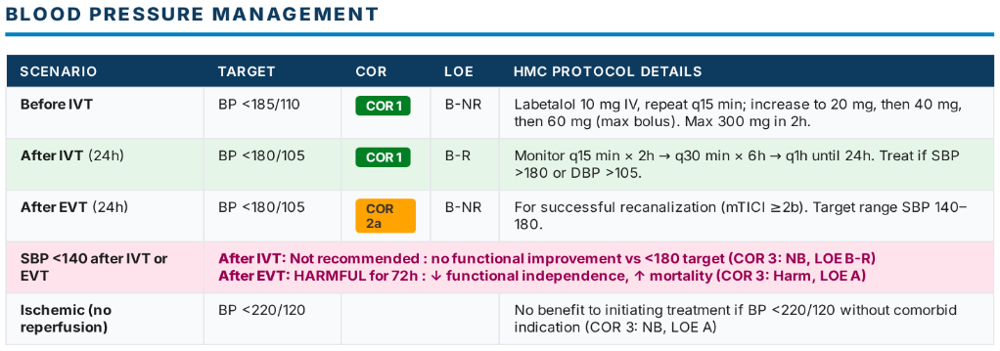

| Absolute Contraindications | |
|---|---|
| CT with hemorrhage | Acute intracranial hemorrhage |
| CT with extensive hypodensity | Clear hypodensity responsible for symptoms |
| Neurosurgery <14 days | Risk of intracranial or spinal hemorrhage |
| Acute spinal cord injury <3 months | Risk of spinal hemorrhage |
| Intra-axial neoplasm | Primary or metastatic brain tumor |
| Infective endocarditis | High risk of mycotic aneurysm rupture |
| Severe coagulopathy | Plt <100K, INR >1.7, aPTT >40s, PT >15s |
| Aortic arch dissection | Risk of aortic rupture or extension |
| Moderate-severe TBI <14 days | GCS <13 OR hemorrhage/contusion/skull fracture |
| Amyloid immunotherapy / ARIA | ICH risk unknown |
| Relative Contraindications | |
| Pre-existing disability/frailty | Benefit/risk remains uncertain |
| DOAC exposure <48h | Safety unknown; limited observational data only |
| Prior ischemic stroke <3 months | Weigh timing and size of prior infarct |
| Prior ICH | CAA = higher risk; HTN/modifiable etiology may have benefit |
| Major non-CNS trauma (14d–3mo) | Surgical consultation recommended; risk of systemic bleed |
| Major non-CNS surgery <10 days | Risk of surgical site hemorrhage |
| GI/GU bleeding <21 days | GI/GU consult to verify bleeding is treated/modified |
| Arterial/dural puncture <7 days | Arterial (non-compressible site): safety unknown. Dural (LP): acceptable. |
| Intracranial vascular malformations | Safety unknown for unruptured/untreated malformations |
| Intracranial arterial dissection | Safety unknown |
| Recent STEMI <3 months | Cardiology consult; risk of hemopericardium |
| Acute pericarditis | Emergent cardiology consult (hemopericardium risk) |
| Left atrial or ventricular thrombus | Cardiology consult |
| Pregnancy / post-partum | Obstetric consult; risk of uterine bleeding |
| Systemic active malignancy | Oncology consult; safety unknown |
| Neurosurgery 14 days–3 months | Neurosurgical consultation recommended |
| Moderate-severe TBI 14 days–3 months | Neurosurgical / neurocritical care consult |
| Benefit Likely > Risk : Consider IVT | |
| Extracranial cervical dissection | Reasonably safe |
| Extra-axial intracranial neoplasm | Likely low risk of hemorrhage |
| Unruptured intracranial aneurysm | Likely low risk of rupture |
| Angiographic procedural stroke | During or immediately post-procedure |
| History of GI/GU bleeding (remote) | Candidates if bleeding is stable |
| History of MI (remote) | No increased risk of cardiac complications |
| Recreational drug use | No increased hemorrhagic risk |
| Stroke mimic uncertainty | Low risk of hemorrhage (0.5% HT risk) |
| Moya-Moya disease | No increased risk of ICH |
Emergency management of orolingual angioedema associated with IV thrombolytic administration for acute ischemic stroke.
| Maintain airway |
| Endotracheal intubation may not be necessary if edema is limited to anterior tongue and lips. |
| Edema involving larynx, palate, floor of mouth, or oropharynx with rapid progression (within 30 min) poses higher risk of requiring intubation. |
| Awake fiberoptic intubation is optimal. Nasal-tracheal intubation may be required but poses risk of epistaxis after IV alteplase. Cricothyroidotomy is rarely needed and also problematic after IV alteplase. |
| Discontinue IV thrombolytic and hold ACE inhibitors |
| Administer IV methylprednisolone 125 mg |
| Administer IV diphenhydramine 50 mg |
| Administer ranitidine 50 mg IV or famotidine 20 mg IV |
| If there is further increase in angioedema, administer epinephrine (0.1%) 0.3 mL subcutaneously or by nebulizer 0.5 mL |
|
Plasma-derived C1 esterase inhibitor (Berinert) (20IU/kg) Refer to Epic Order set and choose IV Thrombolytic option: Life-Threatening Angioedema Treatment (Single Response) |
| Supportive care |

Clinical trials evaluating Tenecteplase (TNK) and Alteplase (tPA) efficacy and safety in extended time windows.
| Trial (Year) | Population / Window | Imaging Selection | Primary Outcome | sICH (TNK/tPA vs Ctrl) | Mortality @ 3m | NNT / NNH |
|---|---|---|---|---|---|---|
| OPTION (2026) | TNK 0.25 mg/kg vs Ctrl. 4.5–24h. Non-LVO (~74% MeVO/distal). No planned EVT. | CTP mismatch (core/penumbra) | mRS 0–1: 43.6% vs 34.2% aRR 1.28 (1.04–1.57), p=0.02 |
2.8% vs 0% | 5.0% vs 3.2% | NNT 11 NNH 35 |
| HOPE (2025) | tPA 0.9 mg/kg vs Ctrl. 4.5–24h. ~63% LVO. No planned EVT. | CTP (Core <70mL) | mRS 0–1: 40.3% vs 26.3% aRR 1.52 (1.14–2.02), p=0.004 |
3.8% vs 0.5% | 10.8% vs 10.8% | NNT 7 NNH 31 |
| EXPECTS (2025) | tPA 0.9 mg/kg vs Ctrl. 4.5–24h. **Posterior circulation**. No planned EVT. | NCCT (no extensive hypodensity) | mRS 0–2: 89.6% vs 72.6% aRR 1.16 (1.03–1.30), p=0.01 |
1.7% vs 0.9% | 5.2% vs 8.5% | NNT 6 NNH 125 |
| CHABLIS-T II (2025) | TNK 0.25 mg/kg vs Ctrl. 4.5–24h. 100% LVO. 54.9% EVT. | CT perfusion selection | Reperfusion w/o sICH: 33.3% vs 10.8% aRR 3.0 (1.6–5.7), p=0.001 |
5.4% vs 4.4% | 10.8% vs 10.6% | NNT 4 (surrogate) NNH 100 |
| TRACE-III (2024) | TNK 0.25 mg/kg vs Ctrl. 4.5–24h. 100% LVO. No planned EVT. | CTP or MRI perfusion | mRS 0–1: 33.0% vs 24.2% aRR 1.37 (1.04–1.81), p=0.03 |
3.0% vs 0.8% | 13.3% vs 13.1% | NNT 11 NNH 45 |
| TIMELESS (2024) | TNK 0.25 mg/kg vs Ctrl. 4.5–24h. 100% LVO + EVT (77%). | CTP or MRI perfusion | mRS shift: Null Adj. common OR 1.13 (0.82–1.57) |
3.2% vs 2.3% | 19.7% vs 18.2% | No Benefit NNH 114 (bleeding) |
| TWIST (2023) | TNK 0.25 mg/kg vs Ctrl. Wake-up. Low/unselected LVO. No planned EVT. | NCCT plain CT only | mRS shift: Null Adj. OR 1.18 (0.88–1.58) |
2.0% vs 1.0% | 10.0% vs 8.0% | No Benefit NNH 95 (bleeding) |
| EXTEND (2019) | tPA 0.9 mg/kg vs Ctrl. 4.5–9h window. ~71% LVO. No EVT. | Perfusion (CTP or MRI) | mRS 0–1: 35.4% vs 29.5% aRR 1.44 (1.01–2.06), p=0.04 |
6.2% vs 0.9% | 11.5% vs 8.9% | NNT 17 NNH 19 |
| WAKE-UP (2018) | tPA 0.9 mg/kg vs Ctrl. Wake-up stroke. Unknown onset. | MRI DWI-FLAIR Mismatch | mRS 0–1: 53.3% vs 41.8% aOR 1.61 (1.09–2.36), p=0.02 |
2.0% vs 0.4% | 4.1% vs 1.2% | NNT 9 NNH 63 |
• **Imaging Mismatch is Mandatory**: Plain CT selection fails to show benefit in extended windows (TWIST). Use CT Perfusion (CTP) penumbral mismatch (OPTION/HOPE/TRACE-III) or MRI DWI-FLAIR mismatch (WAKE-UP).
• **Planned EVT Exception**: If LVO patient is undergoing EVT, late thrombolysis has *no functional benefit* (TIMELESS).
• **sICH Penalties**: Extended window lytics carry higher rates of symptomatic intracranial hemorrhage (sICH). For OPTION, sICH is 2.8% vs 0%; for EXTEND, 6.2% vs 0.9%.
• **Posterior Circulation**: EXPECTS shows excellent results for posterior circulation strokes using plain CT selection (NNT 6).